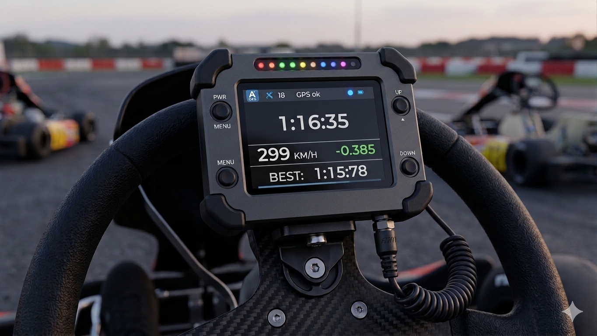

Como funciona o projeto
O protótipo funciona a partir de um circuito que possui uma única linha de partida e chegada. O veículo percorre o circuito em um único sentido e, ao passar novamente pela linha de partida/chegada, o sistema identifica que uma volta foi concluída e realiza a contagem automaticamente.
Além da contagem das voltas, o protótipo também permite trabalhar com dados de telemetria, como velocidade e aceleração, possibilitando analisar o desempenho do veículo durante o percurso.
Para visualizar melhor o funcionamento da telemetria e entender como esses dados são apresentados, é possível acessar a página desenvolvida pelo nosso colega, onde essas informações são demonstradas de forma mais detalhada.
